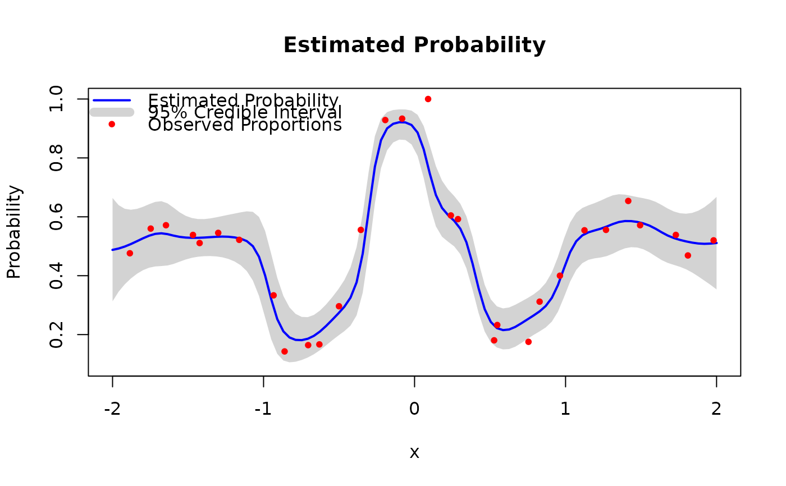
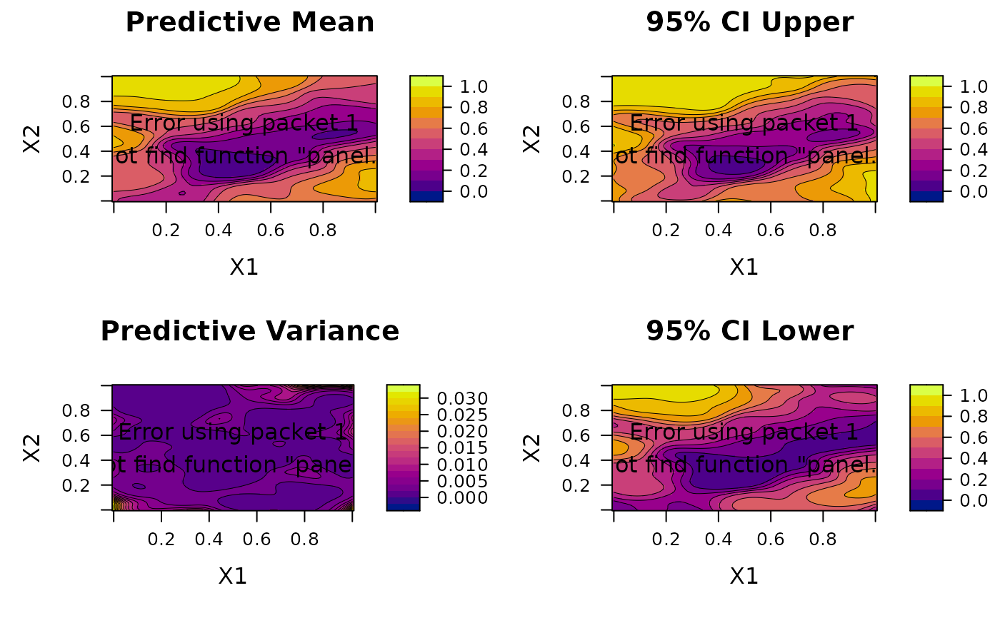
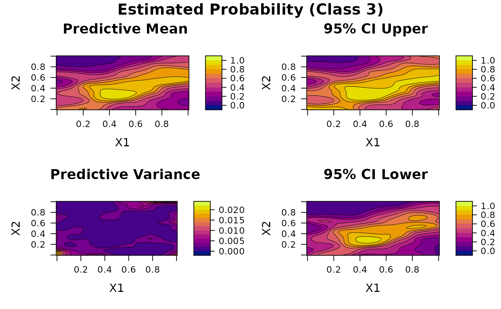

Visualizes fitted BKP or DKP models depending on
the input dimensionality. For 1-dimensional inputs, it displays predicted
class probabilities with credible intervals and observed data. For
2-dimensional inputs, it generates contour plots of posterior summaries.
Usage
# S3 method for class 'BKP'
plot(x, only_mean = FALSE, ...)
# S3 method for class 'DKP'
plot(x, only_mean = FALSE, ...)Value
This function does not return a value. It is called for its side effects, producing plots that visualize the model predictions and uncertainty.
Details
The plotting behavior depends on the dimensionality of the input covariates:
1D inputs:
For
BKP(binary/binomial data), plots the posterior mean curve with a 95% credible band, overlaid with the observed proportions (\(y/m\)).For
DKP(categorical/multinomial data), plots one curve per class, each with a shaded credible interval and the observed class frequencies.For classification tasks, an optional curve of the maximum posterior class probability can be displayed to visualize decision confidence.
2D inputs:
For both models, produces either:
A predictive mean surface (optionally maximum posterior probability for classification), or
A 2-by-2 panel of contour plots showing: predictive mean, predictive 97.5th percentile (upper bound of 95% credible interval), predictive variance, and predictive 2.5th percentile (lower bound).
For DKP, these surfaces are generated separately for each class.
For input dimensions greater than two, the function terminates with an error message.
Examples
# ============================================================== #
# ========================= BKP Examples ======================= #
# ============================================================== #
#-------------------------- 1D Example ---------------------------
set.seed(123)
# Define true success probability function
true_pi_fun <- function(x) {
(1 + exp(-x^2) * cos(10 * (1 - exp(-x)) / (1 + exp(-x)))) / 2
}
n <- 30
Xbounds <- matrix(c(-2,2), nrow=1)
X <- tgp::lhs(n = n, rect = Xbounds)
true_pi <- true_pi_fun(X)
m <- sample(100, n, replace = TRUE)
y <- rbinom(n, size = m, prob = true_pi)
# Fit BKP model
model1 <- fit.BKP(X, y, m, Xbounds=Xbounds)
# Plot results
plot(model1)

#-------------------------- 2D Example ---------------------------
set.seed(123)
# Define 2D latent function and probability transformation
true_pi_fun <- function(X) {
if(is.null(nrow(X))) X <- matrix(X, nrow=1)
m <- 8.6928
s <- 2.4269
x1 <- 4*X[,1]- 2
x2 <- 4*X[,2]- 2
a <- 1 + (x1 + x2 + 1)^2 *
(19- 14*x1 + 3*x1^2- 14*x2 + 6*x1*x2 + 3*x2^2)
b <- 30 + (2*x1- 3*x2)^2 *
(18- 32*x1 + 12*x1^2 + 48*x2- 36*x1*x2 + 27*x2^2)
f <- log(a*b)
f <- (f- m)/s
return(pnorm(f)) # Transform to probability
}
n <- 100
Xbounds <- matrix(c(0, 0, 1, 1), nrow = 2)
X <- tgp::lhs(n = n, rect = Xbounds)
true_pi <- true_pi_fun(X)
m <- sample(100, n, replace = TRUE)
y <- rbinom(n, size = m, prob = true_pi)
# Fit BKP model
model2 <- fit.BKP(X, y, m, Xbounds=Xbounds)
# Plot results
plot(model2)

# ============================================================== #
# ========================= DKP Examples ======================= #
# ============================================================== #
#-------------------------- 1D Example ---------------------------
set.seed(123)
# Define true class probability function (3-class)
true_pi_fun <- function(X) {
p <- (1 + exp(-X^2) * cos(10 * (1 - exp(-X)) / (1 + exp(-X)))) / 2
return(matrix(c(p/2, p/2, 1 - p), nrow = length(p)))
}
n <- 30
Xbounds <- matrix(c(-2, 2), nrow = 1)
X <- tgp::lhs(n = n, rect = Xbounds)
true_pi <- true_pi_fun(X)
m <- sample(100, n, replace = TRUE)
# Generate multinomial responses
Y <- t(sapply(1:n, function(i) rmultinom(1, size = m[i], prob = true_pi[i, ])))
# Fit DKP model
model1 <- fit.DKP(X, Y, Xbounds = Xbounds)
# Plot results
plot(model1)
#-------------------------- 2D Example ---------------------------
set.seed(123)
# Define latent function and transform to 3-class probabilities
true_pi_fun <- function(X) {
if (is.null(nrow(X))) X <- matrix(X, nrow = 1)
m <- 8.6928; s <- 2.4269
x1 <- 4 * X[,1] - 2
x2 <- 4 * X[,2] - 2
a <- 1 + (x1 + x2 + 1)^2 *
(19 - 14*x1 + 3*x1^2 - 14*x2 + 6*x1*x2 + 3*x2^2)
b <- 30 + (2*x1 - 3*x2)^2 *
(18 - 32*x1 + 12*x1^2 + 48*x2 - 36*x1*x2 + 27*x2^2)
f <- (log(a * b) - m) / s
p <- pnorm(f)
return(matrix(c(p/2, p/2, 1 - p), nrow = length(p)))
}
n <- 100
Xbounds <- matrix(c(0, 0, 1, 1), nrow = 2)
X <- tgp::lhs(n = n, rect = Xbounds)
true_pi <- true_pi_fun(X)
m <- sample(100, n, replace = TRUE)
# Generate multinomial responses
Y <- t(sapply(1:n, function(i) rmultinom(1, size = m[i], prob = true_pi[i, ])))
# Fit DKP model
model2 <- fit.DKP(X, Y, Xbounds = Xbounds)
# Plot results
plot(model2)
